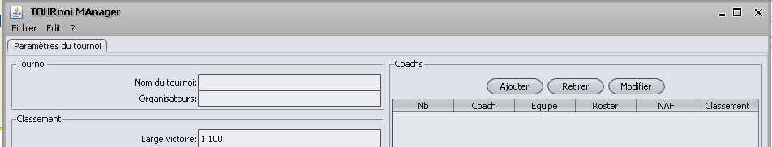
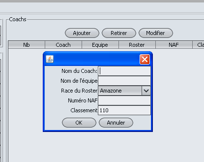

Pour ajouter un coach lors de la création d'un tournoi, il faut se rendre dans l'onglet des paramètres du tournoi,

Puis appuyer sur le bouton "Ajouter" dans la zine "Coachs" sur la
droite de l'écran, une fenêtre de saisie apparait alors:

Les champs à remplir sont:
- Nom du coach: Nom NAF du coach
- Nom de l'équipe: Nom de l'équipe jouée, pas de la race
- Race jouée: Race jouée (limité aux 24 races NAF)
- Numéro NAF lorsqu'il existe
- Classement de l'équipe: Par défaut 110 pour les tournois français.
Il est toujours possible d'ajouter un coach en cours de tournoi,
seulement sur les premières rondes il sera
considéré comme n'ayant pas marqué de points.
De plus, les boutons "Retirer" et "Modifier" permettent d'enlever un coach ou bien de modifier les informations les concernat.